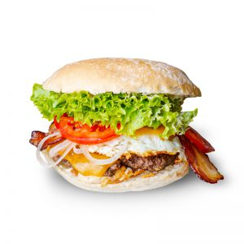

Green Mango Burger
This dish is my favorite from the Green Mango © restaurant in Brussels, Belgium

Recipe
Ingredients
For two people
- 1 pound ground beef
- 4 strips of bacon
- 4 slices of cheddar cheese
- 4 egg
- 4 burger buns
- 1 large tomato, sliced
- 1 onion, sliced
- Lettuce leaves
- Pepper sauce (such as Tabasco)
- Salt and pepper to taste
- Your choice of condiments (mayonnaise, mustard, ketchup, etc.)
Instructions
- Prepare the Bacon and Beef Patties:
- Cook the bacon until crispy. Set aside on paper towels to drain excess fat.
- Divide the ground beef into 4 equal portions and shape them into burger patties. Season each patty with
salt and pepper.
- Cook the Patties:
- Preheat your grill or a skillet over medium-high heat. Cook the burger patties for about 4-5 minutes on
each side for medium doneness.
- Add Cheese and Keep Warm:
- Place a slice of cheddar cheese on each patty a minute or so before they're done cooking, allowing it to
melt.
- Fry the Eggs:
- In the same skillet, if there's enough space, fry the eggs to your desired doneness. For a classic
burger, a sunny-side-up egg works great.
- Assemble the Burger:
- Toast the burger buns lightly.
- On the bottom half of each bun, place lettuce leaves, a slice of tomato, and a few onion rings.
- Place the cooked beef patty with melted cheddar on top of the veggies.
- Add a strip of bacon on each patty.
- Top each patty with a fried egg.
- Spice it Up:
- Drizzle a bit of pepper sauce on the egg or on the top half of the bun for an extra kick.
- Finish the Burgers:
- Add condiments of your choice on the top half of the bun.
- Cover each burger with the top half of the bun.
- Serve and Enjoy:
- Serve your delicious bacon cheddar burgers with a side of fries or a fresh salad.
This burger combines all those fantastic ingredients into one mouthwatering meal. Feel free to customize it to
your preferences!
About Green Mango
GreenMango.be